1. Prognostics Health Management (PHM): the failure mode prediction, anomaly detection, remaining life
prediction.
2. Mathematical modelings: Finite Element analysis,
CFD, Thermal Transfer, Contact Mechanics.
3. Data Science and Machine Learning using
Python, MySQL, R, Pandas, Scikit-learn, Tensorflow, and etc.
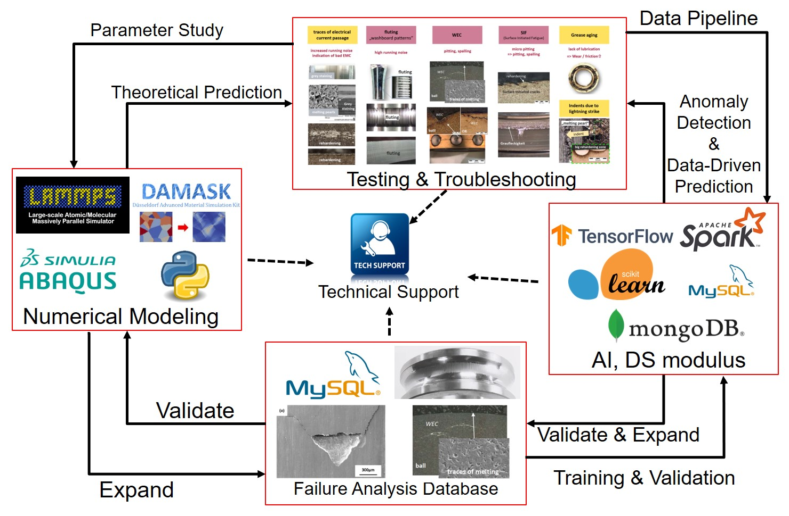
Those projects include some of my personal projects using pubilic dataset and driven by interests
.
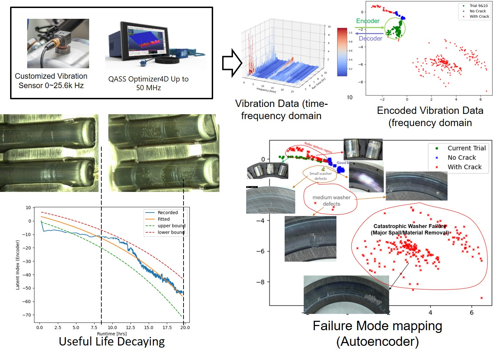
Anomaly Detection is one important topic in predictive maintenance. The vibration
analysis at the system level is challenging due to the system resonance and multiple
noise sources. The impact of vibration generated by a bearing fault has relatively low
energy and it is often accompanied by high energy noise and vibration generated by
simultaneously-active equipment. Therefore, it is difficult to identify the bearing fault
using conventional frequency analysis.
Autoencoder-based machine learning approach can be an alternative way to find the
abnormality in the system-level mechanical system. The failure mode, residual life,
and damage can be monitored and estimated by just using the history data.
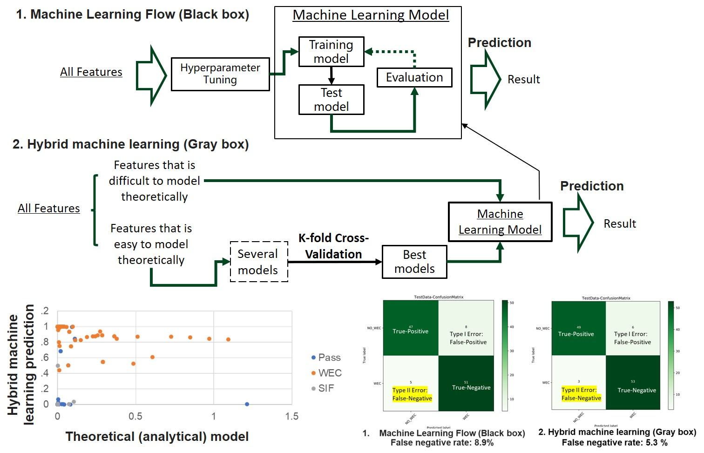
Machine Learning, as a black box prediction, requires sufficient data to avoid the long daunting over-fitting issue. This issue can be alleviated or avoid through integrating simple analytical models which do not require training data and can be extremely fast. The hybrid machine learning model, which integrates the analytical models and machine learning, possess a much better prediction accuracy and a less risk of overfitting. The hybrid machine learning model can be extremely useful when the dataset size is not big enough and/or the data collection is expensive.
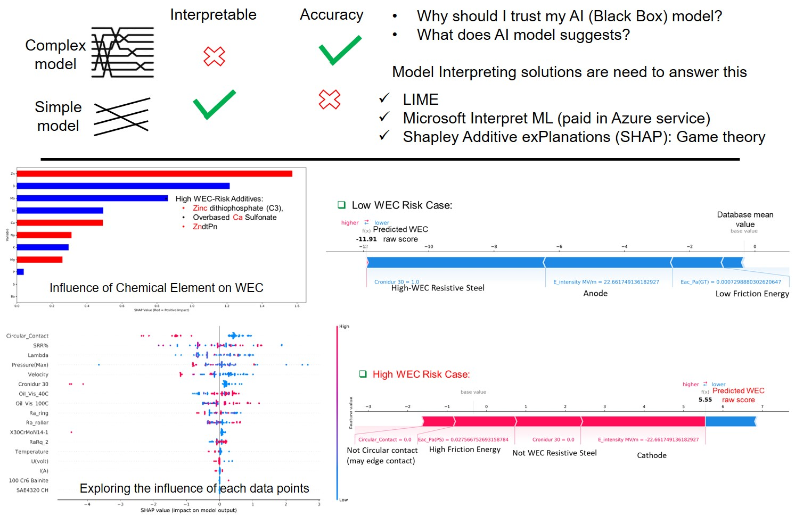
The machine learning model inevitably has poor interpretability due to the complexity.
Explaining machine learning algorithms is also an important topic. With AI interpretation tools,
we can explore the overall contribution of each feature, and, at the same time, the impacts of
specific data points on the outcome of the model. This allows us to examine and do sanity-check
for the machine learning model and dataset. Moreover, the AI interpretation tools can also provide feedback on the specific
case to improve the product design and reduce the potential risk.
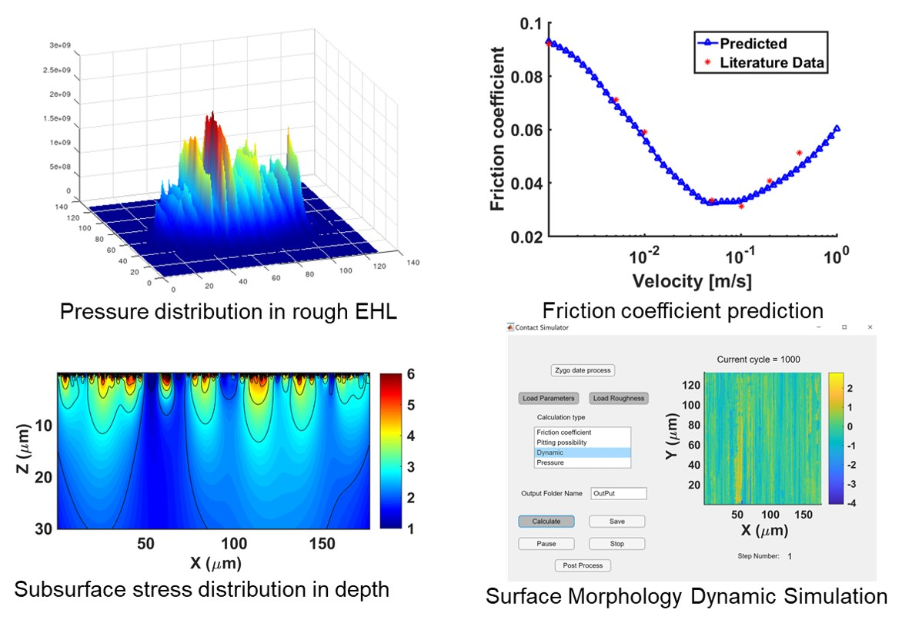
This work predicted fatigue wear lubrication performance of precision parts with
the actual measured surface topography.
With the information of lubricating oil, loading, speed and other information,
one can solve the contact pressure lubrication, friction coefficient, wear,
and fatigue.
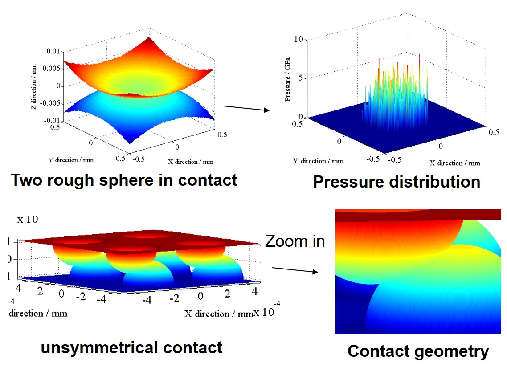
This CG FFT method is a fast and stable method for dry contact.
Especially when the surface roughness need to be considered.
Here shows an example of two rough surface contact, and the
corresponding pressure distribution. Moreover, this method also
has the ability to deal with the unsymmetrical contact.
this indicates its capacity of dealing asperity contact with random geometry.
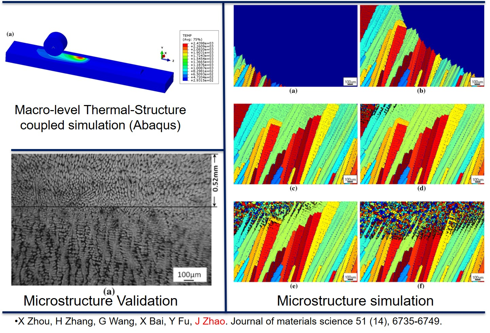
Additive manufactured metallic parts usually have higher porosities. Inspired by the concept
of continuous casting and rolling, a rapid & robust AM solution that combines rolling
with 3D printing was proposed. After the liquid material solidified from the AM process,
the deep rolling process reduce the porosity and generate a strain-free ultra-fine
grain structure. The numerical simulation of the microstructure evolution is critical
to this technique. This simulation work mainly involves the simulation of
the macroscopic thermal structure and the numerical simulation of the microscopic
solidification and recrystallization.
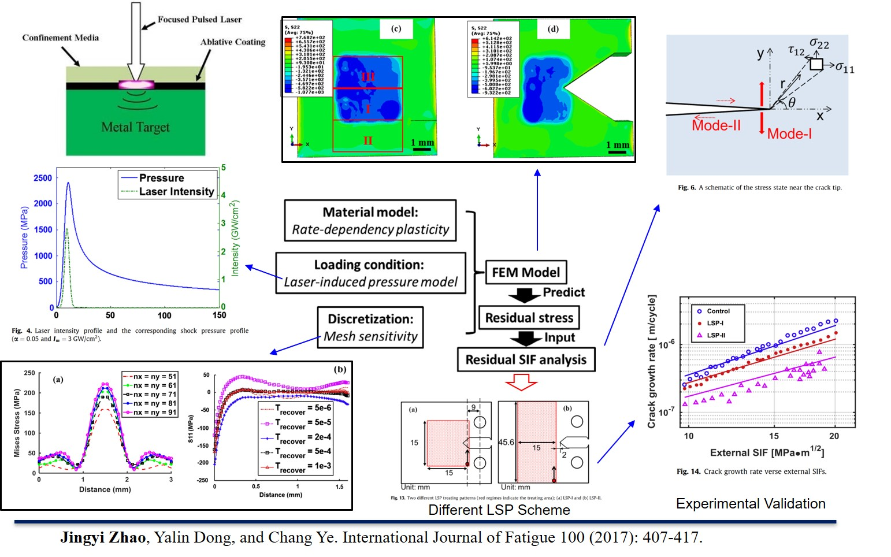
Laser shock Peening (LSP) utilize the laser-excited local plasma explosion to impact the surface of
the material, introducing compressive residual stress, thereby slowing or preventing crack propagation.
Since the laser processing of the actual workpiece usually requires thousands of laser shocks,
the finite element simulation is very time-consuming. There are three important modules in
the finite element model, the high-rate strain material model, the laser plasma
interaction model, and mesh sensitivity study. Finally, the improvement of fatigue performance is
evaluated by calculating Stress Intensity Factor (SIF).
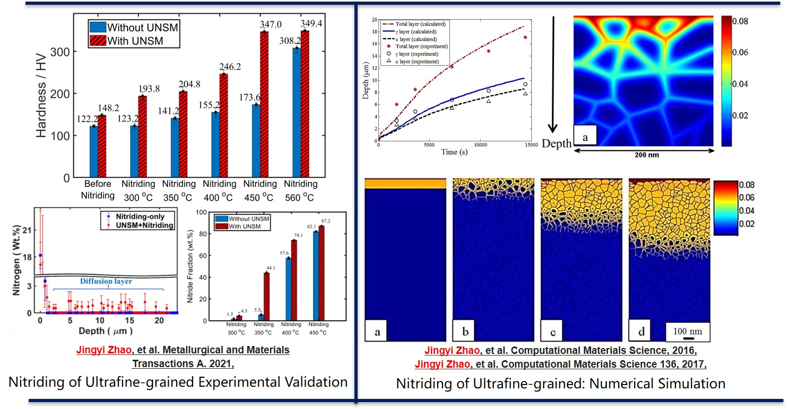
UNSM introduces compressive residual stress and surface nanocrystals, so that the surface of the material
has a higher chemical activity. Therefore, we combine UNSM with the nitriding process. The experimental results
show that the surface hardness after compound nitriding is much higher than single nitriding or single ultrasonic
impact. This improvement can further combat failure modes originating from the surface of the part. Meanwhile,
we mathematically modelled the nitriding thermodynamics and kinetic, and numerically predicted the growth of the
nitride layer. It eventually will provide a theoretical guidance for this novel low-temperature nitriding technique.
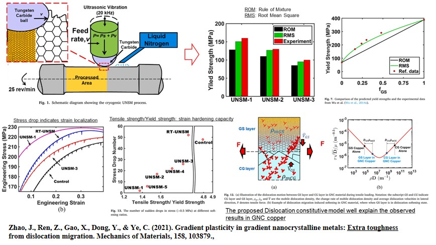
Alloying, quenching, and cold working increase the yield strength of the material, with
the significant reduction in its plasticity and ductility. However, gradient
nanocrystalline material seems to have a far higher plasticity & ductility compared
with uniform materials with the same yield strength. We explained the strengthening mechanism
from the perspective of dislocation dynamics and validate our theory experimentally.
This work will provide theoretical guidance on the structural design of the light-weighted gradient nanocrystalline material.
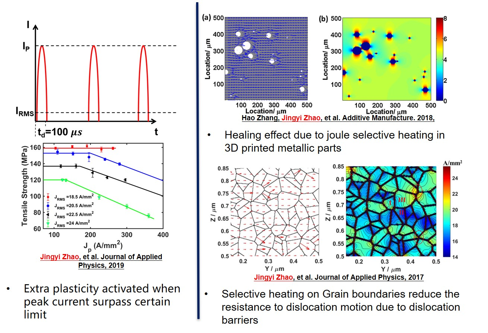
The current density distribution is heterogeneously distributed in the microstructure at micro-scale.
A selective heating effect was found around the interface between different phases,
like grain boundaries, dislocation barriers and material pores. This selective heating can bring
several benefits, i.e., reducing the resistance to dislocation motion, healing the pores of the 3D-printed material.
By adopting a Cellular Automata model and solving the Maxwell electromagnetic equations, the electric current density
distribution inside the material microstructure at micro-scale can be obtained.
The simulation tool is beneficial since current density distribution is the key variable to quantify those effects.
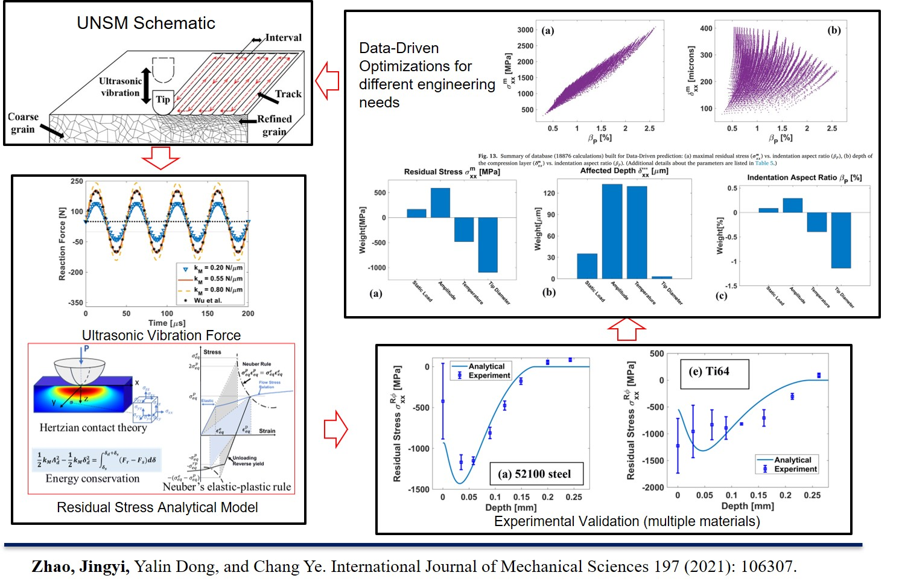
Design of Experiment (DoE) for UNSM is difficult since there are too many
process parameters and the non-linear and dynamic deformation are involved. Finite element
modeling can be helpful but time-consuming. We propose an analytical solution to simulate
ultrasonic impact on the residual stress & strain and surface
roughness. The results are in good agreement with the experimental results.
Moreover, we also demonstrate a DoE process
utilizing the data-driven prediction and parameter optimization, which provide suggestion for the optimal UNSM parameters under different engineering requirements.